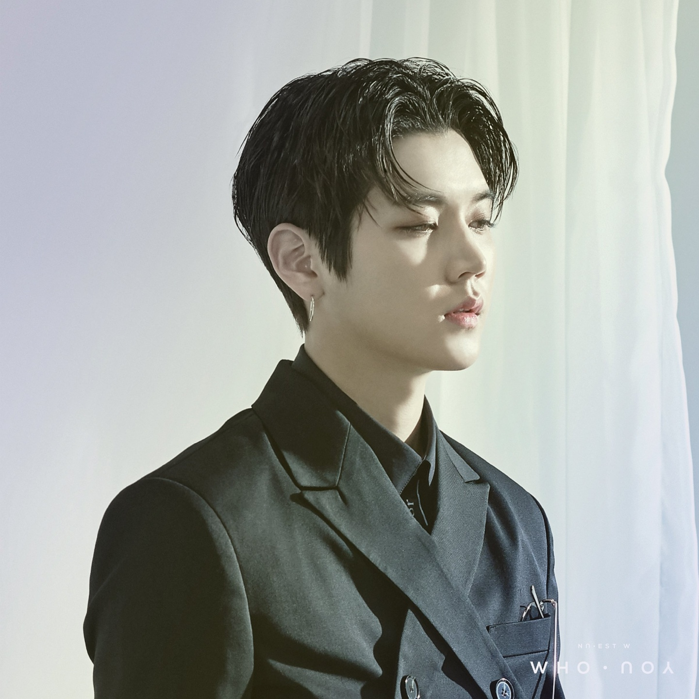

<대한민국의 5인조 보이그룹, 플레디스엔터테인먼트에서 최초로 데뷔한 보이그룹이며 93년생 Aron을 제외한 JR, 백호, 렌, 민현 전원이 95년생으로 구성되어 있다. 2012년 3월 15일 타이틀 곡 'FACE'로 데뷔하였다.
데뷔 6년차가 되는 2017년 아론을 제외한 멤버 전원이 프로듀스 101 시즌2에 출연했다.[3] 최종회에서 멤버 민현이 워너원의 데뷔조로 발탁되었고 1년 6개월 동안 뉴이스트로서의 활동을 하지 못 하게 되었다.
민현을 제외한 4명의 멤버들은 2019년까지 뉴이스트 W로 활동할 예정이다. 2017년 7월 25일 뉴이스트 W 싱글 앨범 ‘있다면 (If you)’을 발표하고 활동을 시작했다.
